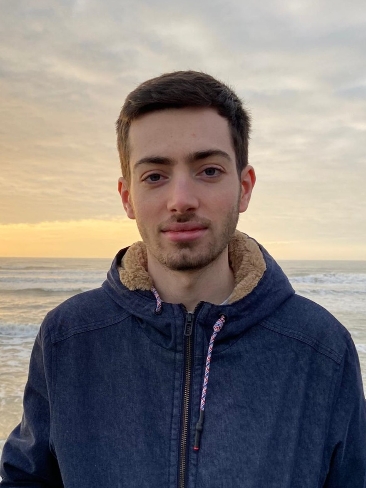

I am a PhD student under the supervision of
Marc Aiguier,
Gilles Dowek
and Olivier Hermant,
in the Logimics team
at MICS laboratory
and in the Deducteam
at Laboratoire Méthodes Formelles.
As a student, I was part of the research curriculum of CentraleSupélec,
under the supervision of Valentin Blot
and Gilles Dowek,
at Laboratoire Méthodes Formelles.
My work was focused on the λΠ-calculus modulo theory and on the
Lambdapi
proof assistant. I implemented an encoding of set theory in Lambdapi.
Working with Théo Winterhalter, I studied the replacement of rewrite rules by axioms inside the λΠ-calculus modulo theory.
Research interests
- Logical frameworks
- Type theory
- Rewrite rules
- Intuitionistic logic
Publications
Research papers
Theses
- Rewrite Rules in the λΠ-Calculus Modulo Theory
Master thesis, CentraleSupélec, 2023.
Talks
- Generic Translations between Dedukti Theories, WG1+2+4 meeting, September 2024 [slides]
- Proofs for Free in the λΠ-Calculus Modulo Theory, LFMTP 2024, July 2024 [slides]
- Kuroda's Translation for the λΠ-Calculus Modulo Theory and Dedukti, LFMTP 2024, July 2024 [slides]
- Kuroda's Translation for Higher-Order Logic, Logimics Meeting, June 2024 [slides]
- Kuroda's Translation for Higher-Order Logic, LMF Séminaire au vert, June 2024 [slides]
- Replacing Rewrite Rules by Equational Axioms in the λΠ-Calculus Modulo Theory, LMF PhD Seminar, May 2024 [slides]
- From Rewrite Rules to Axioms in the λΠ-Calculus Modulo Theory, FoSSaCS 2024, April 2024 [slides]
- Règles de Réécriture dans le λΠ-Calcul Modulo Théorie, Master thesis Defense, December 2023 [slides]
- An Implementation of Set Theory with Pointed Graphs in Dedukti, LFMTP 2022, August 2022 [slides]
Teaching
- Modélisation logique et systèmes formels, CentraleSupélec, 2024-2025
- Systèmes d'information et Programmation, CentraleSupélec, 2024-2025
- Algorithmique et complexité, CentraleSupélec, 2023-2024
- Modélisation logique & Langages et automates, CentraleSupélec, 2023-2024
- Informatique théorique, CentraleSupélec, 2023-2024
Email: thomas (dot) traversie (at) centralesupelec (dot) fr
GitHub: thomastraversie